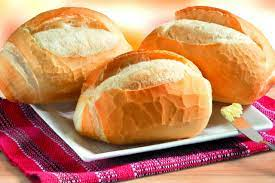
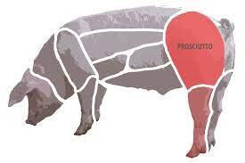
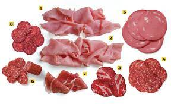

<!DOCTYPE html> 
 <html lang="pt-BR"> 
   <head>
     <link rel="stylesheet" href='style.css'>
   </head>

    <body style="background-color:white">
</body>
 
 <head> 
    <metacharset="UTF-8"> 
    <metaname="viewport" content="width=device-width, initial-scale=1.0"> 
    <metaname="description" content="Meus livros favoritos da Jane Austen"> 
    <title>PÃOZÃO</title> 
     <link rel="stylesheet" type="text/css" href="style2.css"> 
     <link rel="stylesheet" href="reset.css"> 
  
 </head> 
 <header> 
    <h1 class="cabecalho"> 
  Pão Com Presunto
    </h1> 
 </header> 
 <!DOCTYPE html> 
 <html lang="pt-BR"> 
 <head> 
     <meta charset="UTF-8"> 
     <meta name="viewport" content="width=device-width, initial-scale=1.0"> 
     <title> O necessario</title> 
     <link rel="stylesheet" href="reset.css"> 
     <link rel="stylesheet" href="produtos2.css"> 
 </head>  
 <header class="cabecalho"> </header> 
  
 <body > 
    
    <main class="principal"> 
      <div class="livro" > 
            <h1>  O Pão </h1>
             
             <p class="linha"> O pão e um ingrediente muito utilizado no dia a dia composto de farrinha,ovo,fermento e leite.</p> 
         </div> 
 
         <div class="livro"> 
            <h1> O PORCO  </h1>
             
             <p class="linha"> O PORCO É UM DOS ANIMAIS DA FAMILIA DAS CARNES QUE PODEM SER UTILIXADAS PARTES DELE PARA FAZER DIVERSOS PRATOS INCLUSIVE O PRESUNTO </p>  
         </div> 
         <div class="livro"> 
           <h1> </h1>
             
              <p class="linha"> O presunto e uma das partes retiradas do dorso do porco assim com uma carne pura com um gosto otimo.</p> 
      
         </div> 
         <div class="livro"> 
            <h1>  PÃO COM PRESUNTO </h1>
             
             <p class="linha"> Aki esta o resultado do nosso trabalho assim concluindo um delisioso lanche.</p> 
         </div> 

     </main> 
 </body>